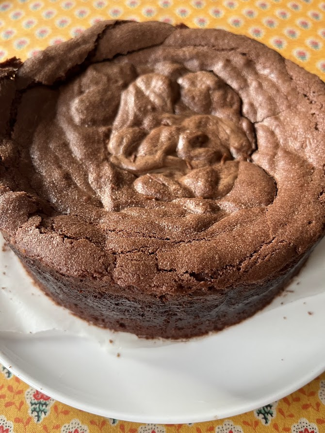
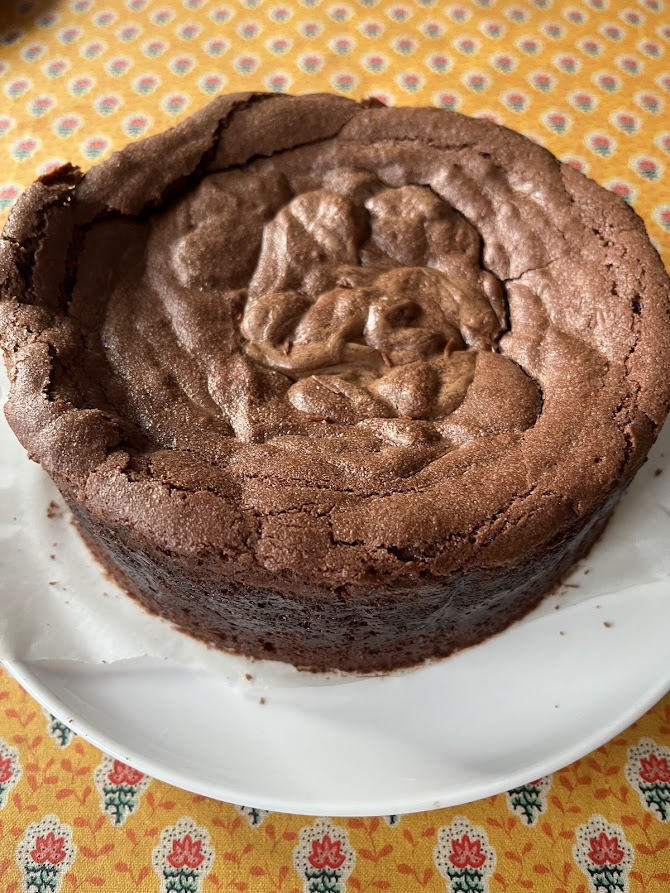

Suzy Cake – Gâteau au chocolat fondant (Pierre Hermé)
⏱️ 25 min de cuisson
🔥 Facile
👥 Moule 24 cm



Étapes
- Préchauffez le four
À 180°C (th.6). - Faites fondre le chocolat
Au bain-marie ou au micro-ondes, faites fondre :- 250 g de chocolat noir
- 250 g de beurre
- Fouettez les œufs
Fouettez vivement les 4 œufs avec les 200 g de sucre. Le mélange doit blanchir et tripler de volume. - Mélangez les préparations
Ajoutez le mélange œufs + sucre dans le chocolat fondu. Mélangez délicatement à la maryse. - Ajoutez la farine
Tamisez les 70 g de farine sur la préparation. Incorporez à la maryse en raclant bien le fond et les parois. - Cuisson
Versez dans un moule à manquer de 24 cm. Enfournez pour 25 minutes.